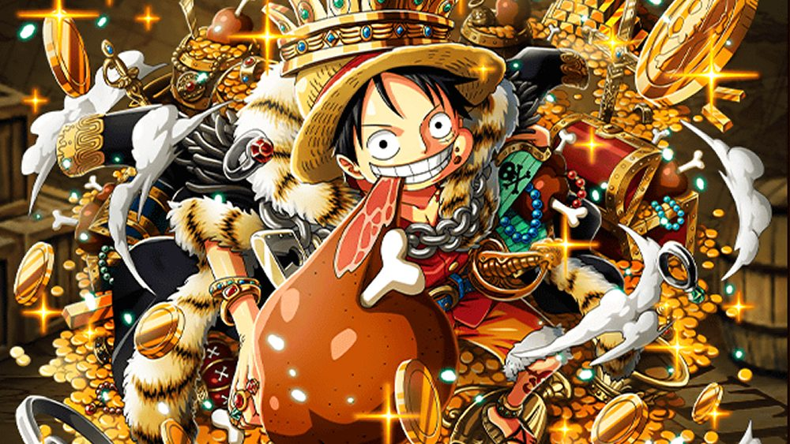

El One Piece es el legendario tesoro de un valor incalculable que resulta ser la suma del objeto que alguien dejó hace siglos y los tesoros del Rey de los Piratas Gol D. Roger. Antes de su ejecución, Roger dijo al mundo que el gran tesoro podría ser reclamado por quien consiguiese llegar hasta allí, dando comienzo así a la «Gran Era de los Piratas». Fue escondido en la isla más profunda de Grand Line, la última isla, posteriormente llamada Laugh Tale por el mismo Roger. Al menos una parte de él fue dejado por Joy Boy bajo circunstancias y fines desconocidos allí durante el Siglo Vacío. Dicho tesoro da nombre al anime y manga de One Piece. eniendo en cuenta el tema recurrente de un tesoro, puede ser de gran valor personal, pero poco valioso.
